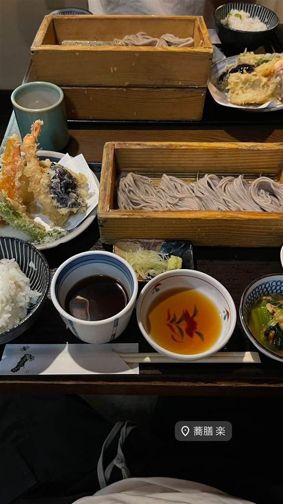
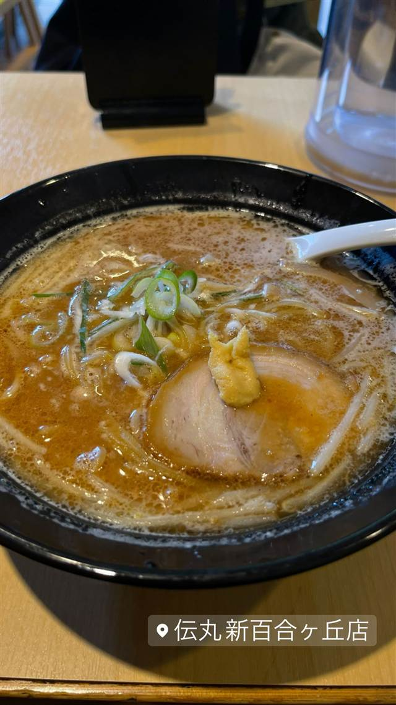

BY TOWN
新百合ヶ丘4店
-

天ぷら・天丼 新百合ヶ丘 蕎膳 楽 つなぎに海藻を使う新潟郷土料理、コシの強いへぎそば 昼 ¥1,000～¥1,999 夜 ¥1,000～¥1,999 -
 カレー 新百合ヶ丘
Curry&herb Cherry blossom（カレー＆ハーブ チェリーブロッサム）新百合丘店
動物油を使わず36種以上のハーブで仕立てた無油カレー
昼 ¥1,000～¥1,999 夜 ¥2,000～¥2,999
カレー 新百合ヶ丘
Curry&herb Cherry blossom（カレー＆ハーブ チェリーブロッサム）新百合丘店
動物油を使わず36種以上のハーブで仕立てた無油カレー
昼 ¥1,000～¥1,999 夜 ¥2,000～¥2,999
-
 クレープ 新百合ヶ丘
パティスリー エチエンヌ（Etienne）
世界大会総合優勝の店主が作る繊細ないちごのケーキ
昼 ～¥999 夜 ～¥999
クレープ 新百合ヶ丘
パティスリー エチエンヌ（Etienne）
世界大会総合優勝の店主が作る繊細ないちごのケーキ
昼 ～¥999 夜 ～¥999
-

味噌 新百合ヶ丘 伝丸 新百合ヶ丘店 白・濃厚・赤の3種から選べる北海道味噌ラーメン 昼 ~¥999 夜 ~¥999